CHIÊM NGƯỠNG VẺ ĐẸP CỔ KÍNH CỦA CHÙA HANG Ở TRÀ VINH
Là một tỉnh có nhiều đồng bào dân tộc Khmer sinh sống nên Trà Vinh mang một vẻ đẹp riêng biệt thể hiện qua các công trình kiến trúc độc đáo. Trong số những danh lam thắng cảnh, di tích nổi tiếng ở Trà Vinh, chùa Hang là một trong những điểm đến đáng tham quan. Chùa Hang không chỉ hấp dẫn du khách bởi vẻ đẹp cổ kính, mà còn bởi sự độc đáo của sân chim và những tác phẩm điêu khắc mỹ nghệ do chính những đôi bàn tay khéo léo, tài hoa của các vị sư nghệ nhân của nhà chùa kỳ công sáng tạo.

Toàn cảnh chùa Hang - Ảnh: Ngô Quang Khôi
Chùa Hang, tiếng Khmer gọi là Kompông Chrây là ngôi chùa Phật giáo Nam tông Khmer nổi tiếng, tọa lạc tại khóm 3, thị trấn Châu Thành, cách trung tâm thành phố Trà Vinh hơn 5 km về hướng nam, theo quốc lộ 54.

Chùa Hang, tiếng Khmer gọi là Kompông Chrây
Khởi nguyên, ngôi chùa này quay mặt về hướng đông, nhìn ra dòng sông Long Bình, nơi có bến ghe xuồng gần bên gốc đa để bà con phum sóc tiện lên chùa nghe kinh, lễ Phật nên có tên Wat Kompong Ch'rây (Chùa Bến Cây Đa). Chùa được thành lập năm 1637 và đã trải qua 22 đời sư trụ trì. Năm 1968 trong sự kiện Tết Mậu Thân, chùa bị bom đạn tàn phá nặng nề. Năm 1977, sư Thạch Suông (nay là sư trụ trì đời thứ 23) trở về, và vận động phục dựng lại chùa. Từ đó đến nay, qua nhiều lần trùng tu, ngôi chùa trở nên khang trang và bề thế.

Người dân quen gọi là chùa Hang bởi cổng phụ phía tây, quay ra tỉnh lộ 36 (nay là quốc lộ 54), được xây giống như một hệ thống 3 hang động sát nhau. Trong đó, cổng chính giữa là một hang lớn, hai cổng hai bên là hai hang nhỏ. Cả ba cổng đều được xây kiên cố với bức tường dày 12 m, tạo cảm giác đứng trong cổng như đang trong hang đá.
Chánh điện chùa xây dựng trên nền đất cao, có nhiều bậc cấp dẫn lên, được trang trí lộng lẫy với nhiều hoa văn, họa tiết. Mái của chánh điện được cấu tạo gồm nhiều lớp chồng lên nhau, trên đỉnh là chóp tháp cao vút, uy nghi. Bên trong chính điện là hai hàng cột cao lớn uy nghi, giữa chính điện là bàn thờ. Tượng Phật Thích Ca to lớn đặt trên cao, phía dưới là những tượng Phật Thích Ca nhỏ hơn trong nhi thế khác nhau.

Chánh điện góc nhìn trên cao
Ao Bà Om – Thắng cảnh độc đáo của đất Trà Vinh
Nhắc tới Trà Vinh, người ta nghĩ đến mảnh đất của những ngôi chùa Khmer cổ kính cùng những di tích lịch sử mang nhiều truyền thuyết huyền thoại, gắn liền với hành trình khai phá, gầy dựng phương Nam. Di tích ao Bà Om ngàn năm soi bóng cổ tự là một trong những niềm tự hào của người dân nơi đây.

Toàn cảnh Ao Bà Om từ trên cao – Ảnh: Daihocsi
Ao Bà Om, hay Ao Vuông nằm cạnh Quốc lộ 53, thuộc phường 8 thành phố Trà Vinh (trước đây là ấp Tà Cụ, xã Nguyệt Hóa, huyện Châu Thành), cách trung tâm thành phố Trà Vinh khoảng 5 km về phía Tây Nam.

Ao Bà Om hay còn gọi Ao Vuông
Du lịch Trà Vinh đến đây, bạn không đơn thuần chỉ được chiêm ngưỡng vẻ đẹp thơ mộng của thiên nhiên mà còn được cảm nhận rõ nét hơn những giá trị văn hoá độc đáo của vùng đất Trà Vinh qua câu chuyện mang đậm màu sắc Khmer Nam Bộ…

Ao có hình chữ nhật, rộng 300m, dài 500m
Ấn tượng đầu tiên khi tới thăm ao Bà Om là cảm giác mát mẻ trước cảnh trời nước xanh biếc một màu. Ao có hình chữ nhật, rộng 300m, dài 500m (vì gần với hình vuông nên còn được gọi là Ao Vuông) khách sẽ bất ngờ vì ao lớn quá, phải gọi là hồ thì đúng hơn.
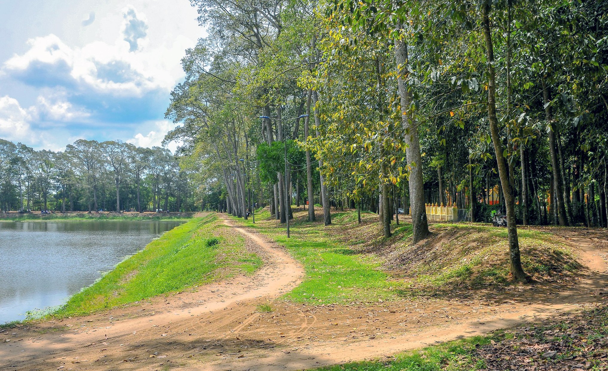Bao bọc xung quanh trên bờ ao là rất nhiều cây cổ thụ
Khu du lịch Rừng Đước
Rừng đước nằm không quá xa trung tâm tỉnh Trà Vinh, chỉ cách khu du lịch Ba Động nổi tiếng chỉ khoảng 7 km nên khá thuận tiện cho việc đi lại của du khách. Khu rừng này có nhiều loại cây đặc trưng của hệ sinh thái ngập mặn như đước, mắm, chà là gai, vẹt... trong đó chiếm số lượng nhiều nhất là cây đước. Đây là loại cây vừa có tác dụng ngăn chặn sự xâm nhập của nước biển vào đất liền vừa là nơi sinh sống của nhiều loại động vật đặc trưng của rừng ngập mặn. Vì vậy mà khu du lịch kiêm khu bảo tồn này có giá trị sinh thái cao.
Hơn thế nữa, cánh rừng đước rộng khoảng hơn 200 ha còn nằm trong hệ thống rừng ngập mặn ven biển Tây Nam Bộ nên được nhà nước chăm sóc và bảo tồn khá cẩn thận.
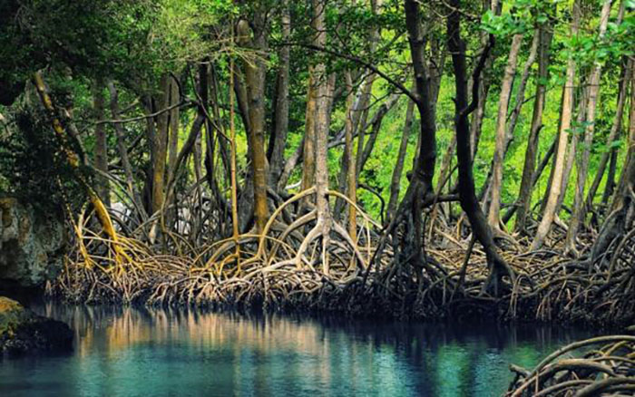Khu du lịch sinh thái nổi tiếng. Ảnh: reviewkinhnghiemdulichthamquandiphuotvietnam
Trà Vinh thuộc khu vực đồng bằng sông Cửu Long nên cũng có khí hậu nhiệt đới ôn hòa đặc trưng của vùng này. Cũng như các tỉnh Bến Tre, Tiền Giang, Long An, Trà Vinh quanh năm mát mẻ nên du khách có thể đến với khu sinh thái Rừng Đước, ao Bà Om, cù lao Long Trị, khu du lịch cồn Hô vào bất kỳ khoảng thời gian nào trong năm cũng được. Tuy nhiên, lời khuyên mà người bản địa thường dành cho du khách là nên lựa chọn đi vào mùa mưa vì đây là khoảng thời gian cây cối phát triển, khí hậu dễ chịu, các loài động vật cũng đa dạng hơn mùa khô. Cụ thể là từ tháng 5 đến tháng 11 hàng năm, với lượng mưa lớn cùng mùa nước nổi kéo về thì thảm thực vật ở Rừng Đước phát triển mạnh mẽ thu hút rất nhiều loài động vật về đây sinh sống, kiếm ăn và sinh sản.

Cảnh đẹp hút khách ở Trà Vinh. Ảnh HoiAnTrip
Du ngoạn rừng Đước bằng đường bộ hoặc đường thủy: tùy vào sở thích và lịch trình mà bạn có thể chọn một trong hai cách tham quan nhưng khám phá sông nước và khu rừng bằng đường thủy thường được khách du lịch lựa chọn nhiều hơn vì đây là cách tham quan mang đậm chất trải nghiệm, thư giãn và thoải mái. Bạn sẽ được len lỏi vào các bụi đước lớn, nhỏ, có cây đã hàng chục năm tuổi, mọc đan xen nhau phía dưới nhưng phía trên vẫn chừa lại khoảng không tạo thành một khoảng trời xanh ngát. Du khách tha hồ tận hưởng cảm giác thú vị và mới lạ khi từng chiếc xuồng máy lướt bồng bềnh giữa không gian trong lành của bạt ngàn cây cối, chim chóc và nhiều loài sinh vật đặc trưng khác của rừng cây - sông nước.
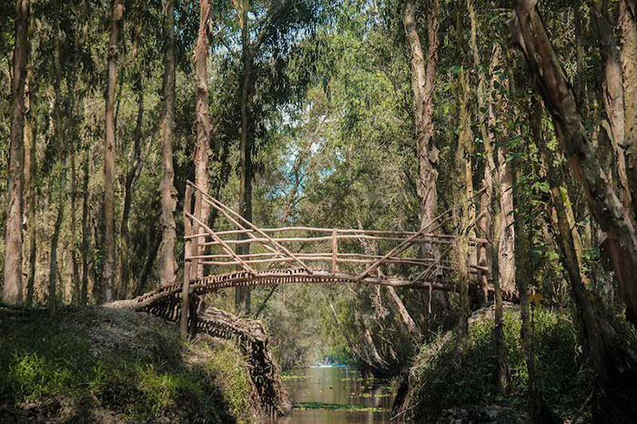Khung cảnh nên thơ không thua gì Rừng tràm Trà Sư. Ảnh: top10travinh
Cù lao Tân Quy – Đặc sắc miệt vườn sông nước Trà Vinh
Cù lao là khoảng đất nằm ở giữa sông, do bồi đắp của dòng chảy lâu ngày và có cây cối mọc nhiều. Đồng bằng sông Cửu Long vốn là nơi nổi tiếng với nhiều cù lao do sự bồi đắp từ sông Tiền và sông Hậu. Có thể kể đến như cù lao Thới Sơn (Tiền Giang), cù lao Tân Quy (Trà Vinh), cù lao Tân Lộc (Cần Thơ), cù lao An Bình (Vĩnh Long), cù lao Tân Phong (Tiền Giang), cù lao Mây (Vĩnh Long) ,…

Đồng bằng sông Cửu Long là có rất nhiều cù lao
Cù lao Tân Quy là cù lao nhỏ nằm giữa dòng sông Hậu. Thuộc địa phận xã An Phú Tân, huyện Cầu Kè, tỉnh Trà Vinh. Cù lao Tân Quy có diện tích 929ha. Phần lớn thuộc huyện Trà Ôn (tỉnh Vĩnh Long) và một phần nhỏ thuộc huyện Cầu Kè (tỉnh Trà Vinh). Nổi tiếng là cù lao xanh, cây trái trĩu cành rất đặc trưng của nét đẹp miệt vườn sông nước Cửu Long.

Tân Quy nằm cách Thành phố Trà Vinh hơn 5 km về hướng Tây Bắc. Và cách Thành phố Hồ Chí Minh 190 km. Đường đi cù lao Tân Quy bạn chỉ mất khoảng 10 phút để đi đò ngang từ vàm Bến Đình. Tuy nhiên, nếu bạn muốn được nhìn ngắm toàn cảnh thiên nhiên và chiêm ngưỡng cảnh đẹp hai bên bờ thì bạn có thể chọn xuất phát từ vàm Bến Cát. Ngoài ra, du khách đến thăm Cù lao có thể ngồi trên những chiếc canô lướt trên dòng sông Hậu để tận hưởng không khí mát lành, sảng khoái.
Khí hậu ở đây mát mẻ quanh năm với nhiệt độ trung bình khoảng 25 độ. Cho nên bạn có thể đi đến đây bất kỳ thời điểm nào để tham quan và nghỉ dưỡng. Tuy nhiên nếu muốn khám phá lễ hội, bạn nên đến đây vào dịp Tết Đoan Ngọ (5/5 âm lịch). Đây là thời điểm khách du lịch ghé về Cù Lao Tân Quy. Tham gia Lễ hội Vu Lan tại chùa Vạn Niên Phong Cung, thị trấn Cầu Kè.
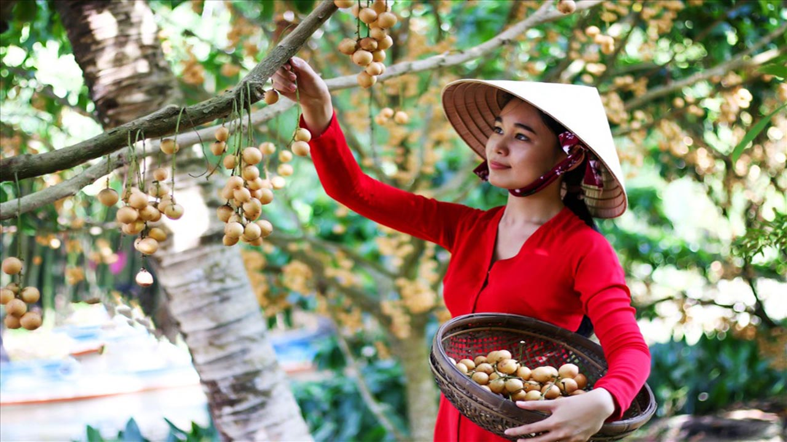Vườn trái cây cù lao Tân Quy quanh năm cây trái trĩu nặng
Cù lao Tân Quy nổi tiếng với biệt danh "xứ của các loài cây ăn trái". Bởi người dân nơi đây đều sinh sống bằng nghề làm vườn cây ăn trái chuyên canh. Người đất ít cũng có vài công vườn để canh tác. Các loại trái cây như: măng cụt, chôm chôm, sầu riêng, mít, dừa, xoài, đu đủ... ở cù lao này từ lâu đã nức tiếng xa gần.
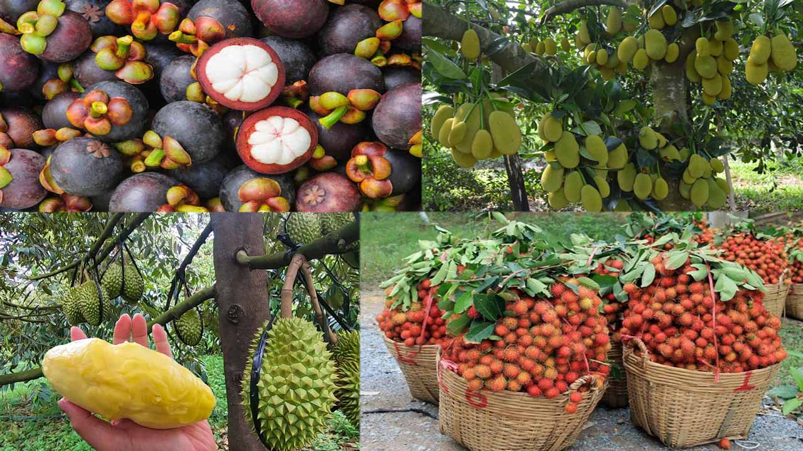Trái cây ở đây vô cùng đa dạng để bạn tha hồ thưởng thức
Tham quan bằng xuồng được nhiều du khách lựa chọn nhất. Với địa thế xung quanh cù lao sông nước, dùng xuồng di chuyển rất thuận tiện. Các hoạt động này thường có hướng dẫn viên và người chèo thuyền đi cùng. Họ sẽ đưa bạn vào các góc vườn cây ăn quả. Đừng quên thử cảm giác len lỏi qua những con rạch nhỏ. Những con rạch ăn thông nhau, tạo thành một hệ thống sông rạch chi chít, sông liền sông, vườn nối vườn, không gian đậm chất Miền Tây.
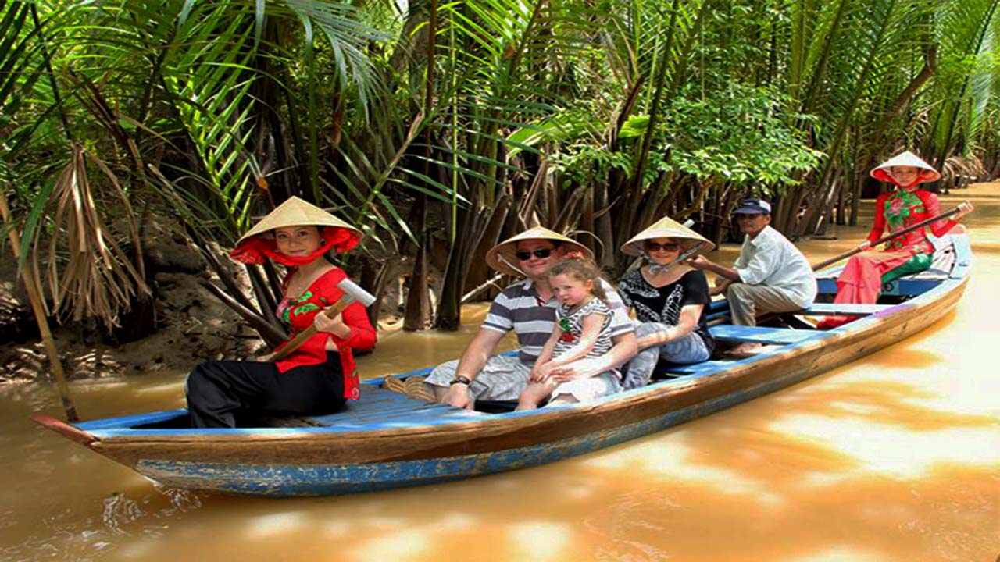Chèo thuyền ngắm cảnh miền Tây sông nước
Chùa Âng Trà Vinh, vẻ đẹp Khmer cổ được lưu giữ hơn 1000 năm
Chùa Âng còn được gọi là Wat Angkor Raig Borei theo ngôn ngữ Paly là một ngôi chùa cổ tại thành phố Trà Vinh. Nằm trong cụm danh thắng nổi tiếng xứ dừa sáp Ao Bà Om cùng bảo tàng văn hóa dân tộc Khmer.
Kiến trúc của chùa Âng Trà Vinh gây ấn tượng với những tòa nhà hình tháp vươn thẳng lên trời, tạo nên vẻ đẹp nguy nga, tráng lệ và vô cùng trang nghiêm. Từ xa nhìn vào, bạn sẽ bị cuốn hút bởi vẻ đẹp cổ kính và uy nghi của ngôi chùa cổ hơn 1000 năm tuổi này.
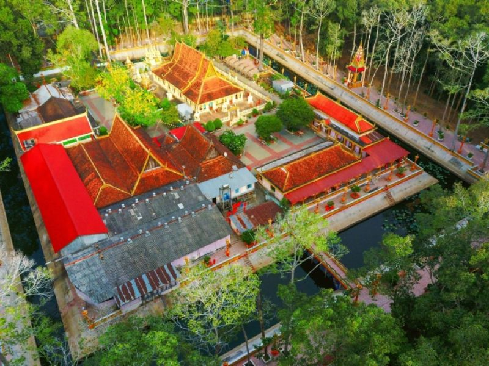Chùa Âng Trà Vinh mang nét đẹp Khmer cổ kính nhưng vẫn rất nguy nga. Ảnh: Dulichthuduc
Với vị trí đắc địa và vẻ đẹp lôi cuốn, chùa Âng là một điểm đến không thể bỏ qua cho những người muốn khám phá văn hóa và lịch sử độc đáo của tỉnh Trà Vinh. Đến thăm chùa Âng, bạn sẽ được trải nghiệm không khí tâm linh và thư thái giữa không gian truyền thống Khmer và nét hiện đại của thành phố Trà Vinh.
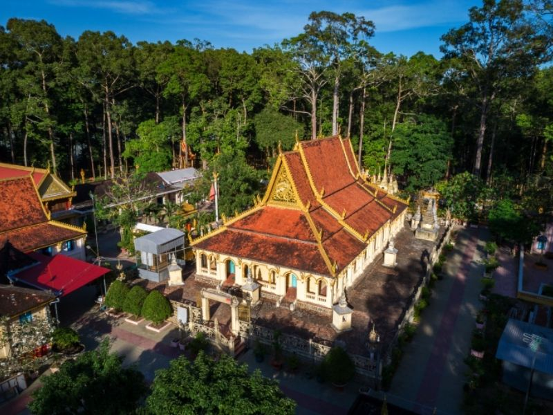Chùa Âng nổi bật với phong cách kiến trúc chùa Khmer Nam Bộ nằm trên khuôn viên rộng 4ha, được bao phủ bởi cây cổ thụ và hào nước sâu bao bọc. Cổng chùa gồm 3 ngọn tháp với lối trang trí bằng nghệ thuật truyền thống Khmer, biến nơi đây trở thành tuyệt tác điêu khắc kỳ công và tinh xảo. Những tượng chằn, tiên nữ và chim thần được trang trí trên cổng chùa mang đến một diện mạo tráng lệ làm nổi bật vẻ đẹp văn hóa và tâm linh của ngôi chùa.

Cổng chùa trang nghiêm gồm 3 ngọn tháp nổi bật. Ảnh: Tham Hiem Mekong
Chính điện hay Preah Vihea của chùa Âng Trà Vinh có hình chữ nhật dài 36m, rộng 24m. Nơi đây được xây dựng bằng đá xanh trên nền cao 2m với các dãy hành lang rộng bốn phía tạo nên nét trang nghiêm và linh thiêng.

Chánh điện của chùa như được dát vàng lung linh. Ảnh: Bietthungoctrai
Bảo tàng văn hóa dân tộc của người Khmer
Một trong những địa điểm du lịch Trà Vinh thuộc khuôn viên thắng cảnh ao Bà Om là bảo tàng văn hóa của người Khmer. Kiến trúc của bảo tàng là sự kết hợp hài hòa giữa phong cách kiến trúc truyền thống và hiện đại. Đây còn là nơi lưu giữ hiện vật về đời sống văn hóa tinh thần, vật chất của đồng bào Khmer ở đồng bằng sông Cửu Long.
Bảo tàng văn hóa dân tộc Khmer tỉnh Trà Vinh tọa lạc tại khóm 4, phường 8, tỉnh Trà Vinh. Bảo tàng nằm trong quần thể khu di tích văn hóa cấp quốc gia Ao Bà Om và chùa Âng. Bảo tàng được xây dựng từ những năm 1995 và đưa vào sử dụng năm 1997 với diện tích trên 1700m2.

Bảo tàng văn hóa dân tộc Khmer tỉnh Trà Vinh. Ảnh: @internet
Hiện tại, ở bảo tàng có hơn 800 hiện vật, hình ảnh của cộng đồng dân tộc Khmer ở Trà Vinh. Bảo tàng chính là niềm tự hào, kiêu hãnh của những người dân Trà Vinh nói chung và dân tộc Khmer nói riêng.
Đến với Bảo tàng dân tộc Khmer Trà Vinh du khách sẽ ấn tượng đầu tiên với khuôn viên rộng lớn, yên tĩnh với rất nhiều cây xanh bao quanh. Bảo tàng nằm tách biệt hoàn toàn với khu đô thị náo nhiệt, ồn ào có không gian trong lành, mát mẻ mang tới cho du khách những những giây phút thư giãn, thoải mái để khám phá.

Bảo tàng văn hóa dân tộc Khmer tỉnh Trà Vinh. Ảnh: @internet
Đến với Bảo tàng văn hóa dân tộc Khmer Trà Vinh du khách sẽ cơ hội hiểu thêm phần nào về những nét đẹp văn hóa truyền thống, những phong tục tập quán độc đáo của người dân Khmer từ đó thêm yêu và mến với mảnh đất và con người nơi đây. Nếu có dịp đến với Trà Vinh du khách nên ghé tới đây để tham quan, tìm hiểu đảm bảo sau chuyến đi du khách sẽ có được những trải nghiệm thú vị, làm phong phú hơn hiểu biết của bản thân.
Chùa Vàm Rây
Chùa Vàm Rây
Chùa Vàm Rây được xây dựng trên diện tích rộng, tọa lạc xã Hàm Tân, huyện Trà Cú, cách thành phố Trà Vinh khoảng 35km. Chùa Vàm Rây ở Trà Vinh hoành tráng, lộng lẫy mang nét cổ kính truyền thống của Phật giáo Nam tông Khmer Nam bộ. Hiện nay chùa được xem là một trong những ngôi chùa lớn nhất và đẹp nhất trong các ngôi chùa của người Khmer. Không chỉ nổi bật bởi kiến trúc độc đáo mà còn nổi bật bởi tượng đức Phật Thích Ca nhập niết bàn dài 54m, cao 20 m, ngang 16m được sơn phủ sơn son thiếp vàng.

Chùa Vàm Rây ở Trà Vinh. Ảnh: @internet
Chùa Vàm Ray mang đậm dấu ấn của kiến trúc Angkor, chính là nét đặc trưng của người Khmer Campuchia. Từ góc nhìn kiến trúc, ngôi chùa này truyền tải một vẻ đẹp kỳ vĩ, khiến mỗi người đặt chân đến đây đều bị ấn tượng và mê hoặc, như bước vào một lâu đài vàng nguy nga và tráng lệ. Sắc vàng lung linh lan tỏa khắp nơi trong chùa, từ mái vòm, bức tường, những cột trụ chống, cho đến những tác phẩm phù điêu và các tượng thần.

Chùa Vàm Rây ở Trà Vinh. Ảnh: @internet
Chánh điện của chùa Vàm Ray nổi bật với sự độc đáo trong thiết kế và trang trí, thể hiện rõ tài năng của những nghệ nhân chuyên nghiệp. Các hoa văn tinh xảo tại đây không chỉ là sự kết hợp tuyệt vời giữa phong cách kiến trúc chùa và nghệ thuật chạm khắc dân gian, mà còn tạo nên những họa tiết truyền thống độc đáo.
Bước vào bên trong chánh điện, du khách sẽ được đắm chìm trong một không gian lộng lẫy với bức tranh tường sặc sỡ, đậm chất văn hóa Khmer. Các bức tranh này xoay quanh cuộc đời của Đức Phật và giáo lý nhà Phật, tạo nên một không gian văn hóa phong phú và sâu sắc. Khi bước vào không gian trang nghiêm của chánh điện, họ sẽ cảm nhận được sự tĩnh lặng và mát mẻ, tạo điều kiện thuận lợi cho việc tham quan và thực hành lễ nghi.
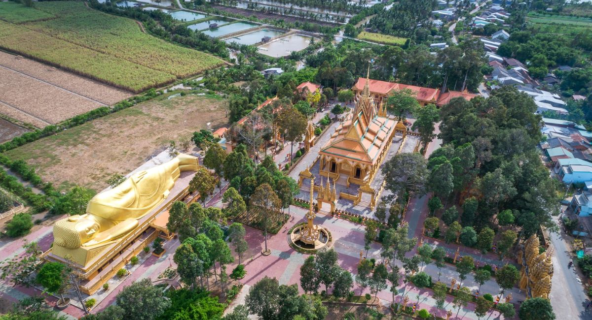Khám phá tòa chánh điện nguy nga. Ảnh: @internet
Tượng đức Phật Thích Ca nhập Niết Bàn, với chiều dài 54m, đặt tại hướng Đông Nam của chính điện, trên một bệ đỡ có quy mô tương đương với một ngôi nhà 2 tầng. Bức tượng Phật cùng bệ đỡ được trang trí bằng một lớp áo màu son thiết vàng, tạo nên một vẻ linh thiêng đặc sắc và làm tôn lên vẻ nguy nga của ngôi chùa.
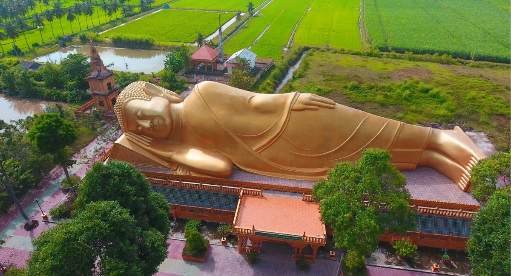Tượng đức Phật Thích Ca. Ảnh: @internet
Biển Ba Động - Địa điểm thu hút đông đảo khách du lịch tại Trà Vinh
Trên chuyến hành trình tìm về đất phương Nam, tìm về với vùng đất Chín Rồng hoang sơ mà ngày xưa ông cha đã dày công đi mở cõi, đừng quên ghé qua mảnh đất Trà Vinh. Những điều đặc biệt trong nét văn hóa đặc trưng của xứ này chắc chắn sẽ làm bạn nhớ mãi không thôi.
Trong đó, biển Ba Động là một trong những điểm du lịch được rất nhiều du khách lựa chọn khám phá. Vẻ đẹp hoang sơ, giao hòa giữa đất liền và biển cả cùng cái tình dân chân chất của người dân biển bản địa nơi đây luôn làm say lòng người lữ khách thập phương.
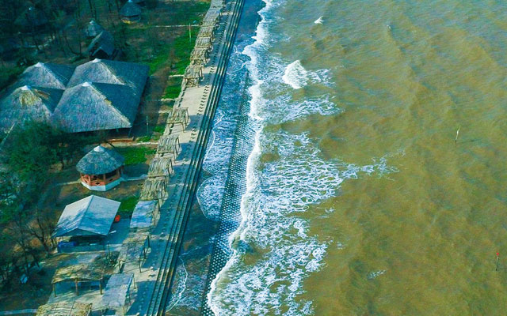Biển Ba Động- Địa điểm thu hút đông đảo khách du lịch tại Trà Vinh. Ảnh: @internet
heo người dân sinh sống tại đây, bãi biển này được gọi là biển Ba Động vì mỗi khi thủy triều thay đổi, bãi biển hiện ra ba động cát, bao gồm hai hang nhỏ và một hang lớn có hình dáng độc đáo. Được phát hiện và khám phá từ những năm đầu của thế kỷ XX từ người Pháp, nơi này chắc chắn sẽ làm say lòng du khách bởi hàng dừa xanh mướt ven bờ biển. Đây cũng là điểm đến thu hút một lượng lớn du khách đi tour Trà Vinh cả trong và ngoài nước mỗi năm.
Biển Ba Động nằm tại phường Long Hòa, huyện Duyên Hải và cách trung tâm của Trà Vinh khoảng 55km. Đối với du khách từ miền Bắc hoặc miền Trung, cần lưu ý rằng Trà Vinh không có sân bay, do đó du khách có thể mua vé máy bay đến TP.HCM hoặc Cần Thơ trước, sau đó di chuyển đến Trà Vinh.

Các tua bin gió. Ảnh: @internet
Đến du lịch Trà Vinh mỗi mùa trong năm đều mang đến một vẻ đẹp đặc biệt. Do đó, du khách có thể lựa chọn bất kỳ thời điểm nào để đến đây. Tuy nhiên, thường thì nơi này thu hút nhiều du khách vào mùa lễ hội nhất.
Trà Vinh được biết đến với lễ hội Chol Chnam Thmay (lễ mừng năm mới) của người Khmer, với các sự kiện thú vị như xem múa truyền thống và thả đèn lồng. Lễ hội này thường diễn ra vào giữa tháng 4. Vì vậy, du khách có thể kết hợp đi du lịch biển Ba Động với việc tham gia lễ hội này.
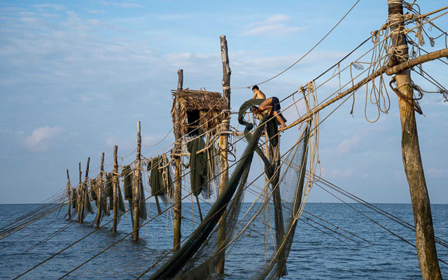Trải nghiệm đóng đáy hàng khơi. Ảnh: @internet
Hoạt động này đang rất thu hút sự quan tâm đặc biệt từ phía giới trẻ. Trong chuyến đi này, du khách có thể tham gia vào hoạt động đánh bắt hải sản trên biển, tìm hiểu cuộc sống thực tế của ngư dân. Không chỉ giúp du khách khám phá một góc nhìn mới về cuộc sống trên biển, từ đó giải tỏa căng thẳng và lo âu trong cuộc sống thành thị, mà hoạt động này còn giúp du khách đi tour du lịch Trà Vinh hiểu sâu hơn về những khó khăn và thách thức mà ngư dân phải đối mặt hàng ngày trên biển.